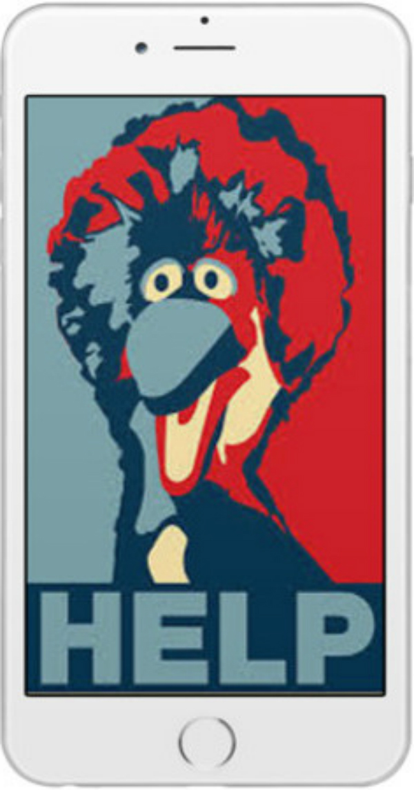

Remixing Obama Hope:
Generating Counterpublic Rhetorics with Mobile Augmented Reality
Analyzing Counterpublic Remixes
Special instructions for viewing this section:
Download the “Remixing Hope” app from the Google Play store with an Android phone: https://play.google.com/store/apps/details?id=com.augmented.obama.
Ensure that the volume on your mobile device is turned up.
Open the “Remixing Hope” application and use the “Assemblage, Reaappropriation, Redistribution, and Genre Play” buttons to access augmented reality content for the corresponding images in this section.
In this section, I take advantage of recent advancements in mobile AR known as “vision-based” augmented reality. Vision-based AR requires a visual marker to trigger and orient digital overlays, such as a QR Code or a poster. Here, remixed versions of the Obama Hope poster are used as visual “triggers” for AR content. These AR overlays are accessible to anyone who scans the image, regardless of their physical location. In order to demonstrate how visual studies scholars can leverage the rhetorical affordances of emerging vision-based AR technologies, I use AR to briefly analyze four different categories of remix as first identified by Dustin Edwards—types that can be combined and repurposed, I ultimately want to show, to generate new forms of multimodal counterpublic remix.
In their introduction to The Routledge Companion to Remix Studies, Eduardo Navas, Owen Gallagher, and xtine burrough describe how “remix” was first popularized within New York City’s disco and hip-hop cultures of the 1970s when DJ’s and musicians began to experiment with cutting and pasting audio tracks from records. Today, however, the term remix refers more generally to “the act of using preexisting materials to create something new,” whether splicing together YouTube videos to make an original movie, rearranging the letters in a poem, or even changing a few letters on a digital image (1 Navas et. al.). In his chapter “A Rhetoric of Remix,” Scott H. Church builds from this definition to describe how writers and rhetors have always draw upon practices of remix for rhetorical invention. Church notes that one of the key rhetorical features of an effective remix is the rhetor’s ability to “[exploit and leverage] the audience’s understanding of the samples in their original contexts” (44). Although creating a remixed rhetorical object—whether a video, image, or print text—is necessarily the creation of “something new,” there are certain types of remix—such as those created in response to Obama Hope—that rely more directly upon a rhetorical interplay between the remix and the original. These types of remixes are most effective for galvanizing counterpublics because they not only reference a shared rhetorical encounter with the original, but they also reframe this encounter through a shared critique. In this way, counterpublic remixes acquire the potential to “build common values” through practices of participatory recomposition (Ridolfo and DeVoss).
Writing and rhetoric scholars have used the concept of “remix” to rethink a number of key assumptions within the field, from the canon of delivery (Ridolfo and DeVoss) to the formation of knowledge via writing (Rice “Digital Aurality”) to the history of composition (Palmeri). Although such applications certainly yielded generative insights, they collectively perpetuate a tendency within the field to use “remix” as a catch-all rhetorical framework for interpreting a diverse array of rhetorical practices and new media genres. In his article “Framing Remix Rhetorically: Toward a Typology of Transformative Work,” Edwards points out that one of the effects of remix being applied to such disparate genres, modalities, and cultures is that the term “remix” has transformed into “a cumbersome, if not overwhelming, concept,” thus becoming less useful as a theoretical and methodological framework for analyzing and creating remixed texts (42). In response, Edwards provides a typology that students and scholars can use as an entry point for engaging in different remix practices. Edwards four-part typology of remix includes:
Assemblage: creating new texts out of a database of other texts
Reappropriation: altering already-existing texts to subvert meaning
Redistribution: sharing or adding to a text to enhance circulation and reception
Genre Play: incorporating and repurposing different genre conventions
Although Edwards developed this typology through an analysis of a variety of media and genres, from YouTube videos to standardized tests, it is especially useful for analyzing remixes of widely circulated images in that counterpublics tend to take advantage of all four kinds of remix practices described in this typology.
Example # 1: Assemblage
Edwards writes that “assemblage is a method of composing wherein a composer builds a new text by gathering, repurposing, and deploying a combination of already-existing texts” (47). Although assemblage is perhaps most common in video and music remixes, it also appears in image-remixes, as demonstrated in Figure 2. This image was created by Shepard Fairey during the height of the Occupy movement in late 2011. According to Fairey’s described intention of the remix on his personal website, it is intended to “push the insiders [e.g. Obama] to do the right thing for the people.”
Figure 2. Scan the image above using the “Remixing Hope” application you were instructed to download at the beginning of the section. When you scan figure one, you should see the word “Assemblage” appear above the image. Attribution: “Occupy HOPE.” Shepard Fairey, 2011.
In this counterpublic remix, Fairey generates a new design by taking his original Obama Hope design and combining it with the already-existing Guy Fawkes mask and Occupy movement slogan “We are the 99%.” The Guy Fawkes mask is a popular image of anti-government sentiment that was appropriated by the Occupy movement to critique escalating economic disparities in the United States. The political slogan emphasized such economic disparities by playing off the 1% statistic, which refers to the top 1% wealthiest people in society receiving a disproportionate share of cultural, political, and economic capital. By assembling such signs alongside the utopic idealism conveyed by the original Obama Hope icon, the remix contradicts the mainstream liberalism associated with Obama Hope and aligns with a more active and progressive political agenda. In doing so, the remix not only challenges Obama to pursue more radical policies for addressing income disparity; it simultaneously attempts to galvanize participation in the more socially and economically progressive counterpublic that came to constitute the Occupy Movement.
Example # 2: Reappropriation
According to Edwards, reappropriative remixes create meaning by “slightly altering an existing text and/or reclaiming or ‘taking back’ already existing texts, with one of its primary rhetorical aims being the subversion of “dominant discourses” (47). As Edwards writes, reappropriative remixes are fundamentally subversive: “Reappropriation involves making tactical changes to an existing text (or set of texts) to signal resistance or offer a critique of the original text or the concept for which it stands” (47-8).
Figure 3. When you scan the image above, you should see the word “Reappropriation.” If you see a different word, move the phone away from the image for a few seconds and then scan it again. Attribution: jcdurbant, 2013. https://jcdurbant.wordpress.com/2013/06/page/3/.
Effective reappropriative remixes create minimal visual modifications for maximum rhetorical effect. The counterpublic remix in Figure 3, for instance, emerged in 2013 in response to Obama’s defense of the National Security Agency’s mass surveillance programs. This design subverts the hopeful and honest depiction of Obama in Fairey’s original design to demonstrate the Obama administration’s complicity in perpetuating intrusive government surveillance. Such subversion is accomplished by replacing the word “Hope” with the word “Wiretapping” and inserting a pair of thin wiretapping headphones on top of Obama’s head. Through these small “tactical changes” to Obama Hope, Obama’s contemplative, hopeful visage becomes much more cold and sinister. This design became especially powerful in that it participated within a wider network of counterpublic rhetorics that were circulating at the time to reject the notion that Obama’s administration constituted a significant difference in regard to bigger issues of corrupt governance (i.e. surveillance). It especially surfaced on numerous blogs and online forums such as Reddit where people gathered to vehemently critique Obama’s actions and galvanize counterpublic resistance to his administration. Interestingly, while this counterpublic remix’s circulation slowed once the NSA scandal lost mass attention, it resurfaced when Donald Trump falsely accused Obama of wiretapping his apartment in 2016, contributing to the sustained counterpublic resistance to Obama that never fully died down.
Example # 3: Redistribution
Counterpublic remixes would not be able to galvanize counterpublic rhetorical action if they did not circulate. Counterpublic remixes thus always entail redistribution, which Edwards explains refers to “sharing or adding to an already existing text for the purpose of reaching a new audience, offering an updated message, and/or spreading a text further” (49). Redistributive remixes simultaneously consume and generate rhetorical energy by circulating widely and participating within a distributed network of discourses (47). In doing so, redistributive remixes become “shared topos through which rhetors can express their beliefs and mobilize collective groups for action” (50).
As an example, Edwards cites the “binders full of women” phrase, first mentioned by Mitt Romney during the second presidential debate of 2012. Interestingly, during the first debate of that presidential campaign season, Obama Hope became enmeshed within a different counterpublic remix that was redistributed after Romney made the remark that if he were elected president, he would end subsidies to PBS. In his full statement to the debate moderator, Romney said: “I like PBS, I love Big Bird…but I’m not gonna keep on spending money on things to borrow money from China to pay for.” During and after the debate, the phrase “#SaveBigBird” began trending on Twitter and other social media platforms as digital counterpublics began to form in defense of the beloved children’s character and PBS. As this phrase trended, groups redistributed it into different media and genres as a way of galvanizing collective action against Romney’s remark.
Figure 4. When you scan the image above, you should see the word “Redistribution.” If you see a different word, move the phone away from the image for a few seconds and then scan it again. Attribution: Uploaded to knowyourmeme.com by donotbugme.
The image in figure four became part of a shared topos that allowed digital citizens to express their support for PBS through a popular public icon (Big Bird) who came to symbolize the benefits of government subsidized television programming. By replacing the word “Hope” with Big Bird’s plea for “Help,” the remix in figure four reinforces a sense of counterpublic solidarity against Mitt Romney’s comments about PBS and the GOP’s stance on government funding more broadly. Moreover, by leveraging a familiar visual design aesthetic, the remix is able to borrow some of the visual rhetorical energy of the original Obama Hope design, thereby redistributing arguments in support of PBS funding to audiences who are sympathetic to the progressive message of Obama’s 2012 campaign.
Example # 4: Genre Play
This counterpublic remix, which entailed changing “Hope” to “Hype,” makes a critique against Obama as a hyper-commodified “brand.” As such, this change demonstrates how remix practices intersected with racist tropes circulating around Obama’s candidacy. For instance, in 2008, the far-right conservative group Citizens United funded a propaganda film titled “Hype: The Obama Effect” in an effort to portray Obama as disingenuous and anti-American (Harris). In promotional videos for the film, white politicians and political commentators seek to discredit the legitimacy of Obama’s campaign by claiming that he has merely seduced the general public through his media image and public speaking skills. The film was part of a larger effort by Citizens United and other far-right political organizing groups to frame Obama’s success as mere “eloquence” and having “little substance” (“About”). Such attacks intersected with other racist ideas circulating at the time surrounding Obama’s “articulateness” as the main (or only) reason that he received so much popular support (Alim et al. 36-37). Collectively, these commentaries on Obama’s public speaking skills circulated alongside, and in some cases reinforced, the racist notion that a Black politician’s ascent to the nation’s highest office could only be explained by his rhetorical manipulation of the wider public rather than a powerful political movement that successfully galvanized many voters across the country.
Figure 5. When you scan the image above, you should see the word “Genre Play.” If you see a different word, move the phone away from the image for a few seconds and then scan it again. Attribution: Uploaded to knowyourmeme.com by Jostin Ascuncion.
As these remixes demonstrate, reactions to Obama Hope were complex and diffuse, intersecting with a variety of cultural and political discourses, from concerns over government surveillance to racist tropes deployed throughout Obama’s candidacy. By deploying mobile AR to identify these remix categories, I hope to demonstrate a potential application of this emerging technology to track the historical (re)circulation of such images in disparate digital and physical contexts.
Next SectionBack to Top